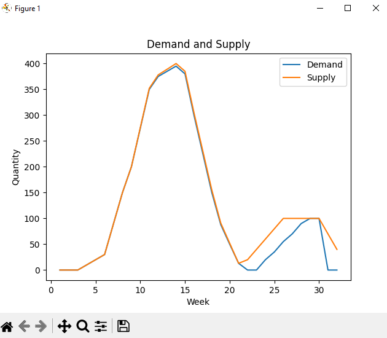

Introductie
Projectgroep
Dit is het portfolio van projectgroep minor smart industry 2024
Deze groep bestaat uit:
- Sjoerd van Stratum
- Germain Lijftogt
- Marc Huijbers
Bedrijf
Wij voeren een project uit voor Mprise Agriware. Mprise Agriware is een bedrijf dat zich specialiseert in ERP systemen voor de tuinbouwsector. Met de transitie naar de digitale wereld helpen ze erbij om dit vorm te geven. Dit doen ze door het aanbieden van krachtige toekomst bestendige software, om mensen met plezier, efficiënt en effectief te laten werken, en daarbij data gedreven beslissingen te maken. De aangeboden software is op basis van Microsoft Dynamics 365.
Opdracht
De productieplanning in de tuinbouw is een belangrijk onderdeel in deze sector. Dit is bepalend voor wat er uiteindelijk verkocht kan worden. Tijdens het maken van de productieplanning zijn er verschillende factoren waaraan gedacht moet worden. In de tuinbouw kan bij een overschot aan productie de producten niet lang bewaard worden in de voorraad. Dit betekent dat de planning erg zorgvuldig overwogen moet worden om geen onnodige kosten te maken gedurende het proces. Op dit moment gaat dit voornamelijk handmatig, gekeken wat de verwachte vraag gaat worden. Bij deze planning komt veel variabelen kijken zoals weersomstandigheden.
Mprise is van mening dat op dit proces geïnnoveerd kan worden. Door de ontwikkelingen rondom AI zien zij hier mogelijkheden in. Daarom willen zij kijken naar de mogelijkheden om een tool te ontwerpen die deze productieplanning makkelijker, efficiënter, betrouwbaarder, effectiever kan maken. Oftewel op elke mogelijke manier kan verbeteren. In de onderstaande afbeelding is te zien hoe dat er uit ziet. In het rood is de vraag aangegeven (demand) en in het blauw het aanbod (supply).

Een medewerker moet nu handmatig een job, wat het planten van stekjes inhoud inplannen. Zo probeert de planner een planning te maken die de blauwe lijn van het aanbod zo dicht mogelijk op de rode lijn van de vraag laat aansluiten. Dit werk kost veel tijd en omdat dit naar eigen inzicht moet worden ingevuld. Om dit makkelijker te maken wil Mprise hier een AI-oplossing gebruiken om automatisch voorstellen te creëren.
Resultaat
Conclusie uit dit onderzoek is dat een optimalisatie algoritme de best passende oplossing is. Bij inleiding van dit probleem is verteld dat er is gekeken naar een oplossing met behulp van ChatGPT. Echter is dit AI-model niet geschikt omdat deze niet met rekenkundige vraagstukken om kan gaan. Gedurende het onderzoek werd gedacht dat het een regressie probleem was, echter is gebleken dat in dit project dit niet de juiste benadering was. De reden hiervoor is dat voor lineaire regressie de relatie tussen de variabelen lineair moet zijn, wat niet het geval is hier (zie grafiek 1). Binnen regressie kan er nog gekeken naar niet-lineaire regressie. Echter. In het kader van dit probleem is deze benadering zo complex dat dit niet wenselijk of reëel is.
Het prototype van het algoritme is opgesteld met een brute force benadering. Deze benadering kan in een relatief korte tijd verschillende parameters nagaan, en zo met een passende productieplanning komen. Bij dit probleem komt ook complexiteit kijken, het aantal variabele en invoerparameters zijn erg groot. Het prototype is in zijn huidige oplever staat een erg basale variant van het algoritme. Die in loop der tijd geoptimaliseerd moet worden. Bij het optimaliseren van het algoritme moet worden nagegaan naar welke parameters als eerst gekeken moet worden om een ander, beter resultaat te krijgen. Onderstaand is een afbeelding van het gevisualiseerde resultaat van het algoritme.
Uit dit project is een concreet resultaat gekomen in de vorm van een prototype. Dit prototype is nog niet volledig, en kan in zijn huidige staat nog niet volledig gebruikt worden door de gebruikers. Het prototype moet hiervoor eerst verder aangevuld en getest worden. Het prototype wordt aangeleverd in de vorm van een Jupyter notebook. Deze methode levert de code op een manier dat de functies van de code makkelijk begrepen kan worden door de toegevoegde opmerkingen. Waardoor aanpassingen maken aan het prototype makkelijker gaat.
Binnen dit onderzoek is gekeken naar een optimale wijze van implementatie in de bestaande software. Echter moet er meer gekeken worden naar de beste manier van implementeren binnen de software van Mprise. Hier moet worden nagegaan of de implementatie doormiddel van control add-ins kan worden aangehouden, en of deze wijze kan blijven aanhouden bij opschaling van de ontwikkelde tool. Wanneer opschaling noodzakelijk is kan gebruik worden gemaakt van Azure Logics voor implementatie binnen de software.